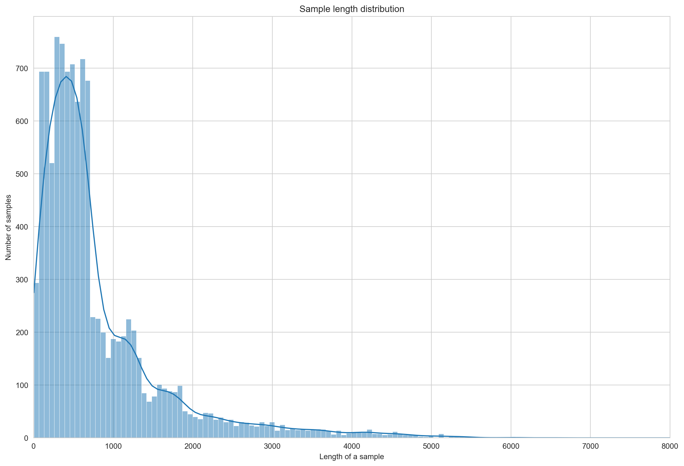
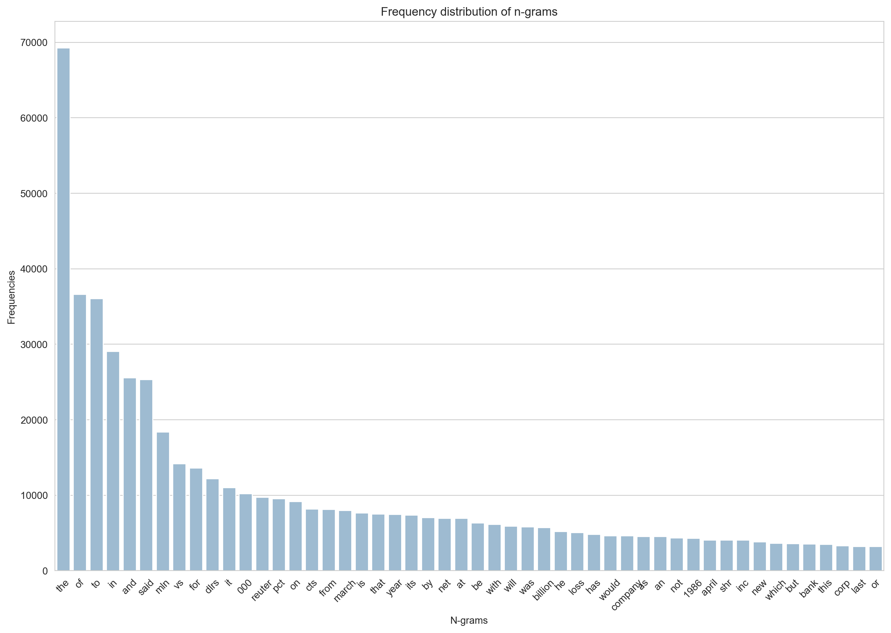

import numpy as np
import pandas as pd
import pickle
from pathlib import Path
import seaborn as sns
sns.set_style("whitegrid")
import matplotlib.pyplot as pltText Classification (Reuters-21578)
Prepare Dataset
Download
from ds_tut import download_from_url
archive_name = "reuters21578.tar.gz"
training_data_url = "http://www.daviddlewis.com/resources/testcollections/reuters21578/{}".format(archive_name)
data_root = Path.cwd() / "data" / "tmp"
data_root.mkdir(parents=True, exist_ok=True)
training_data_path = data_root / archive_name
reuters_dir = data_root / archive_name.split(".")[0]
data_size = download_from_url(training_data_url, training_data_path)Unpack
import tarfile
tar = tarfile.open(str(training_data_path))
tar.extractall(path=str(reuters_dir))
tar.close()Parse
import pickle
from ds_tut.datasets import ReutersParser, ReutersCorpus
documents = []
rp = ReutersParser()
for sgml_path in reuters_dir.glob("*.sgm"):
for doc in rp.parse_sgml(str(sgml_path)):
doc["filename"] = sgml_path
documents.append(doc)
pickle_path = reuters_dir / "documents.pkl"
with open(str(pickle_path), "wb") as f:
pickle.dump(documents, f)
reuters = ReutersCorpus(documents)
pickle_path = reuters_dir / "corpus.pkl"
with open(str(pickle_path), "wb") as f:
pickle.dump(reuters, f)Explore Reuters-21578
Load dataset
from ds_tut.datasets import ReutersCorpus
data_root = Path.cwd() / "data" / "tmp"
reuters_documents_path = data_root / "reuters21578" / "documents.pkl"
reuters_corpus_path = data_root / "reuters21578" / "corpus.pkl"
documents = pickle.load(open(reuters_documents_path, "rb"))
reuters = pickle.load(open(reuters_corpus_path, "rb"))
df, top_ten_ids, train_labels, test_labels = reuters.build_dataframe(pd=pd)
train, test = reuters.split_modapte()Get some simple stats
number_of_samples = reuters.number_of_samples
number_of_classes = reuters.number_of_classes
number_of_samples_per_class = int(np.average([tc for tc in reuters.topic_counts.values() if tc > 1]))
number_of_words_per_sample = int(np.median([len(d["text"].split()) for d in reuters.docs]))
samples_to_words_per_sample_ratio = int(number_of_samples / number_of_words_per_sample)nchars = 52
print("Number of samples:".ljust(nchars), reuters.number_of_samples)
print("Number of classes:".ljust(nchars), reuters.number_of_classes)
print("Number of samples per class:".ljust(nchars), number_of_samples_per_class)
print("Number of words per sample:".ljust(nchars), number_of_words_per_sample)
print("Number of samples/number of words per sample ratio:".ljust(nchars), samples_to_words_per_sample_ratio)Number of samples: 10789
Number of classes: 119
Number of samples per class: 148
Number of words per sample: 89
Number of samples/number of words per sample ratio: 121Distribution of sample length for reuters21578
fig, ax = plt.subplots(figsize=(15, 10))
sns.histplot([len(d["text"]) for d in reuters.docs], kde=True, ax=ax)
ax.set_title('Sample length distribution')
ax.set_xlabel('Length of a sample')
ax.set_xlim(0, 8000)
_ = ax.set_ylabel('Number of samples')
Word frequency distribution
from sklearn.feature_extraction.text import CountVectorizer
kwargs = {
'ngram_range': (1, 1),
'dtype': 'int32',
'strip_accents': 'unicode',
'decode_error': 'replace',
'analyzer': 'word', # Split text into word tokens.
}
vectorizer = CountVectorizer(**kwargs)
vectorized_texts = vectorizer.fit_transform(reuters.texts)
all_ngrams = list(vectorizer.get_feature_names_out())
all_counts = vectorized_texts.sum(axis=0).tolist()[0]
all_counts, all_ngrams = zip(*[(c, n) for c, n in sorted(
zip(all_counts, all_ngrams), reverse=True)])
num_ngrams=50
ngrams = list(all_ngrams)[:num_ngrams]
counts = list(all_counts)[:num_ngrams]
idx = np.arange(num_ngrams)fig, ax = plt.subplots(figsize=(15, 10))
sns.barplot(x=ngrams, y=counts, ax=ax, color="#95BCD9")
ax.set_title('Sample length distribution')
plt.xlabel('N-grams')
_ = plt.ylabel('Frequencies')
_ = plt.title('Frequency distribution of n-grams')
_ = plt.xticks(idx, ngrams, rotation=45)
Choose a model flowchart
from IPython.display import display, HTML
url = "https://developers.google.com/machine-learning/guides/text-classification/images/TextClassificationFlowchart.png"
html_code = f"""
<div>
<p>Number of samples/number of words per sample ratio: {samples_to_words_per_sample_ratio}</p>
<img src="{url}" style="width: 100%">
</div>
"""
display(HTML(html_code))Number of samples/number of words per sample ratio: 121

Simple Linear Model
Ok, pretty impressive image. How about to try just a very simple linear model?
Get text and labels
from sklearn.preprocessing import MultiLabelBinarizer
train_docs, test_docs = reuters.split_modapte()
print(len(train_docs), len(test_docs))
train = [d["text"] for d in train_docs]
train_labels = reuters.get_labels(train_docs)
y_train = MultiLabelBinarizer().fit_transform(train_labels)
test = [d["text"] for d in test_docs]
test_labels = reuters.get_labels(test_docs)
y_test = MultiLabelBinarizer().fit_transform(test_labels)7770 3019Vectorize Texts
from sklearn.feature_extraction.text import TfidfVectorizer
vectorizer = TfidfVectorizer()
vectorizer.fit(train)
X_train = vectorizer.transform(train)
X_test = vectorizer.transform(test)Evaluate Models
from sklearn.metrics import classification_report
from sklearn.multiclass import OneVsRestClassifier
top_ten_ids, top_ten_names = reuters.top_n(n=10)Logistic Regression
This is usually one of the first models to try. Simple, robust, fast, elegant. One of the best baseline methods.
from sklearn.linear_model import LogisticRegression
# model = OneVsRestClassifier(LogisticRegression(C=100, solver="liblinear", multi_class="ovr"))
model = OneVsRestClassifier(LogisticRegression(solver="liblinear", multi_class="ovr"))
model.fit(X_train, y_train)
y_pred = model.predict(X_test)
print(classification_report(y_test, y_pred, target_names=top_ten_names, labels=top_ten_ids, zero_division=0.0)) precision recall f1-score support
earn 0.99 0.97 0.98 1087
acq 0.98 0.92 0.95 719
money-fx 0.78 0.51 0.62 179
grain 0.99 0.60 0.75 149
crude 0.96 0.57 0.72 189
trade 0.93 0.54 0.68 117
interest 0.91 0.47 0.62 131
ship 1.00 0.13 0.24 89
wheat 0.97 0.51 0.67 71
corn 0.95 0.32 0.48 56
micro avg 0.97 0.79 0.87 2787
macro avg 0.95 0.56 0.67 2787
weighted avg 0.97 0.79 0.85 2787
samples avg 0.70 0.69 0.69 2787
Linear Support Vector Machine
from sklearn.svm import LinearSVC
model = OneVsRestClassifier(LinearSVC(dual=True))
model.fit(X_train, y_train)
y_pred = model.predict(X_test)
print(classification_report(y_test, y_pred, target_names=top_ten_names, labels=top_ten_ids, digits=3, zero_division=0.0)) precision recall f1-score support
earn 0.991 0.980 0.985 1087
acq 0.984 0.950 0.967 719
money-fx 0.810 0.788 0.799 179
grain 0.975 0.799 0.878 149
crude 0.906 0.868 0.886 189
trade 0.830 0.709 0.765 117
interest 0.870 0.664 0.753 131
ship 0.924 0.685 0.787 89
wheat 0.929 0.732 0.819 71
corn 0.955 0.750 0.840 56
micro avg 0.956 0.896 0.925 2787
macro avg 0.917 0.793 0.848 2787
weighted avg 0.954 0.896 0.922 2787
samples avg 0.771 0.769 0.767 2787
Precision/Recall-Curve
One way to visualize the performance of a classifier.
df_train = df.query("modapte == 'train'")
df_test = df.query("modapte == 'test'")
mlb = MultiLabelBinarizer()
y_train = mlb.fit_transform(df_train.label)
y_test = mlb.transform(df_test.label)
print(df_train.shape, df_test.shape)
cache_dir = reuters_dir / "cache"(7770, 9) (3019, 9)from sklearn.pipeline import Pipeline
from sklearn.pipeline import FeatureUnion
from sklearn.preprocessing import StandardScaler
from sklearn.base import BaseEstimator, TransformerMixin
class EmptyFitMixin:
def fit(self, x, y=None):
return self
class TextStats(BaseEstimator, EmptyFitMixin, TransformerMixin):
"""Extract features from each document"""
def transform(self, col):
tc = col.str
features = [
tc.len(), # character count
tc.count(r"\n"), # line count
tc.count(r"\."), # sentence count
tc.split().apply(lambda x: len(x) if x is not None else 0), # word count
]
features = np.concatenate([f.values.reshape(-1, 1) for f in features], axis=1)
where_are_NaNs = np.isnan(features)
features[where_are_NaNs] = 0
return features.astype(np.float64)
class TextFromPandasColumns(EmptyFitMixin, BaseEstimator, TransformerMixin):
"""Extract the text from a list of columns in a single pass.
Takes a pandas dataframe and produces a series of texts
from joined columns defined in `text_cols`.
"""
text_cols = ["title", "body"]
def transform(self, df):
def join(items, axis=None):
return " ".join([str(item) for item in items])
data = df[self.text_cols].apply(lambda x: "" if x.iloc[0] is None else x, axis=1)
texts = data.apply(join, axis=1)
return texts
class ColumnSelector(EmptyFitMixin, BaseEstimator, TransformerMixin):
def __init__(self, column, filter_none=True):
self.column = column
self.filter_none = filter_none
def transform(self, df):
col = df[self.column]
if self.filter_none:
col = col.apply(lambda x: "" if x is None else x)
return col
pipeline = Pipeline(
memory=str(cache_dir),
steps=[
("union", FeatureUnion(n_jobs=1, transformer_list=[
("title_stats", Pipeline([
("column", ColumnSelector("title")),
("stats", TextStats()),
("scaled", StandardScaler()),
])),
("body_stats", Pipeline([
("column", ColumnSelector("body")),
("stats", TextStats()),
("scaled", StandardScaler()),
])),
("combined_text", Pipeline([
("column", TextFromPandasColumns()),
("tfidf", TfidfVectorizer()),
])),
])),
("clf", OneVsRestClassifier(LinearSVC(C=1, dual=True, max_iter=20000))),
])pipeline.fit(df_train, y_train)
y_pred = pipeline.predict(df_test)
print(classification_report(y_test, y_pred, target_names=top_ten_names, labels=top_ten_ids, digits=3, zero_division=0.0))y_score = pipeline.decision_function(df_test)
from sklearn.preprocessing import label_binarize
y_test_bin = label_binarize(y_test, classes=list(range(y_score.shape[1])))from sklearn.metrics import precision_recall_curve
from sklearn.metrics import average_precision_score
# For each class
precision, recall, average_precision = {}, {}, {}
for i in range(y_score.shape[1]):
precision[i], recall[i], _ = precision_recall_curve(y_test_bin[:, i], y_score[:, i])
average_precision[i] = average_precision_score(y_test_bin[:, i], y_score[:, i])
# A "micro-average": quantifying score on all classes jointly
precision["micro"], recall["micro"], _ = precision_recall_curve(y_test_bin.ravel(), y_score.ravel())
average_precision["micro"] = average_precision_score(y_test_bin, y_score, average="micro")
print('Average precision score, micro-averaged over all classes: {0:0.2f}'
.format(average_precision["micro"]))# precision recall breakeven point
prbp = None
for num, (p, r) in enumerate(zip(precision["micro"], recall["micro"])):
if p == r:
print(num, p, r)
prbp = pplt.figure(figsize=(15, 10))
plt.step(recall['micro'], precision['micro'], color='b', alpha=0.2,
where='post')
plt.fill_between(recall["micro"], precision["micro"], step='post', alpha=0.2,
color='b')
plt.xlabel('Recall')
plt.ylabel('Precision')
plt.ylim([0.0, 1.05])
plt.xlim([0.0, 1.0])
plt.title(
'Average precision score, micro-averaged over all classes: AP={0:0.2f}'
.format(average_precision["micro"]))